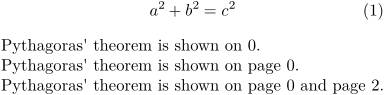
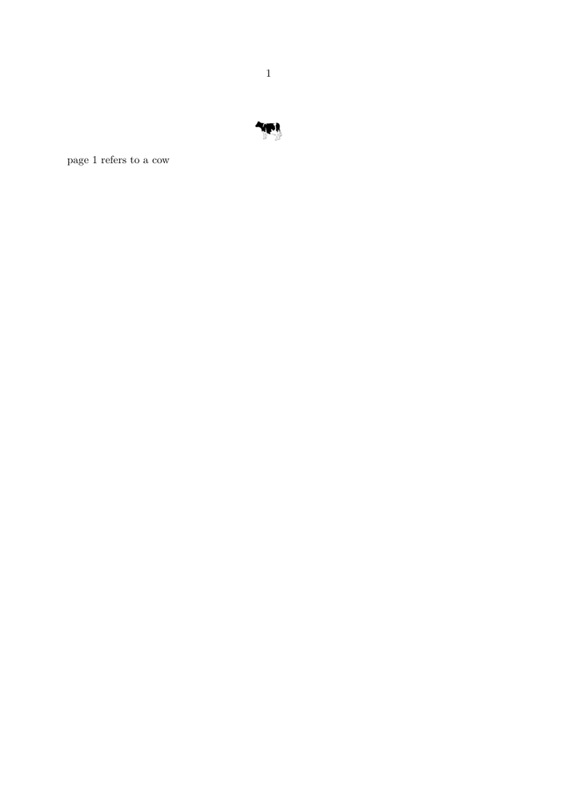

Contents
Summary
The command
\at
is used for referencing using a page number.
Settings
| \at{...}{...}[...] | |
| {...} | text |
| {...} | text |
| [...] | reference |
| Option | Explanation |
|---|---|
| Prefix of the referenced label | |
| Suffix of the referenced label | |
Description
Inserts the page number of a location in the document which has been marked with a label (e.g. an equation, figure, section, enumerated item). The curly braces are optional and contain prefix and suffix, the square brackets contain the logical label to which you are referring.
Examples
Example 1
The following example shows all three variants of the command \at.
Note: In the third sentence a whitespace after the referenced page number is forced with ~ (tilde).
-
\setuppapersize[A5] \placeformula[eq:pythagoras] \startformula a^2 + b^2 = c^2 \stopformula Pythagoras' theorem is shown on \at[eq:pythagoras]. Pythagoras' theorem is shown on \at{page}[eq:pythagoras]. Pythagoras' theorem is shown on \at{page}{~and page 2}[eq:pythagoras].
produces
- 
Example 2
to make \at work with \externalfigure, add a derivation of \placefloat such as \placefigure (used in the example) to generate the reference
-
\setupcaption[number=no] \starttext \placefigure[][my-cow-label]{}{\externalfigure[cow.pdf][width=7mm]} \at{page }[my-cow-label] refers to a cow \stoptext
produces
- 
Notes
See also
- strc-ref.mkvi
- \about to insert the title of a referenced item.
- \in to insert the number of a referenced item.
- \setupinteraction to control the color and contrast color of links
- \ref